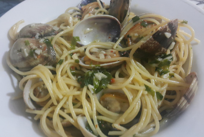

Spaghetti Alle Carbonara

Spaghetti Alla Carbonara with Braised Meat
Spaghetti Alla Carbonara is another of my favorite dishes. I love the taste of guanciale, or even pancetta for
that matter, but I have been living in Istanbul for several years and have become accustomed to preparing this
dish with Turkish Kavurma, which is a mix of braised beef and lamb meat with lamb tail fat that is compressed
into a log shape to preserve it.
Ingredients
- 500gr. Spaghetti
- 500gr. Vongole
- Olive Oil
- 2-3 Cloves of Garlic
- Rock Salt
- Red Pepper Flakes
- 1 Glass Dry White Wine
- A Bunch of Parsley
Instructions
- Boil plenty of water in a large pot.
- Heat a generous ammount of olive oil in a pan.
- Add the whole cloves of garlic in the heated olive oil.
- Remove the cloves once they are nicely browned. Put them aside...
- Add the vongole to the pan and stir them gently for about 15-20 seconds.
- Add the glass of white wine and let it simmer.
- Add a pinch of salt to the boiling water. Don't over do it. The fresh vongole will be salty from the sea.
- Let vongole simmer until they begin to open. If they don't, they are not good to eat. Send to /dev/null :(
- Add the spaghetti to the boiling water. Follow instructions on the package for time. I generally go for 6 or
7 minutes.
- I strain the pasta usually a little early. I keep some of the water and then usually don't use it.
- Dump the pasta over the vongole and mix it in gently. It will finish to cook... and soak up the delicious
broth.
- One the spaghetti are nice and shiny and have absorbed the sauce, sprinkle roughly chopped parsley over it
and mix in.
- Buon Apetito!